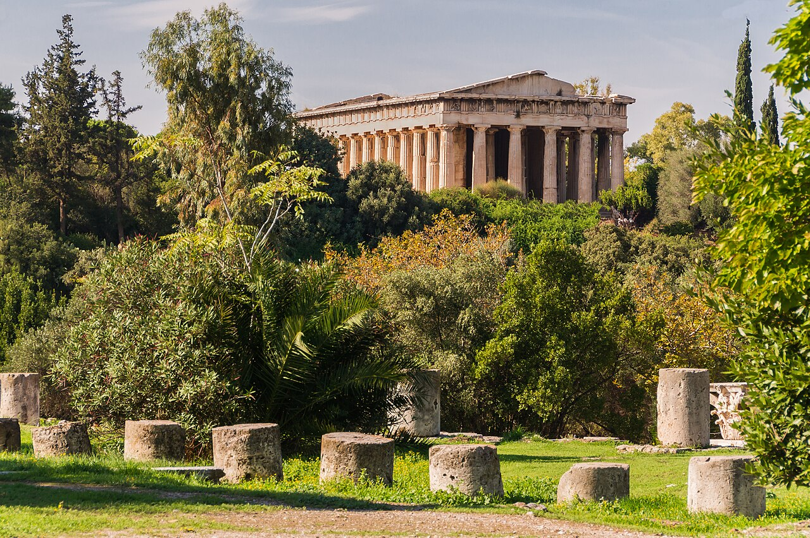
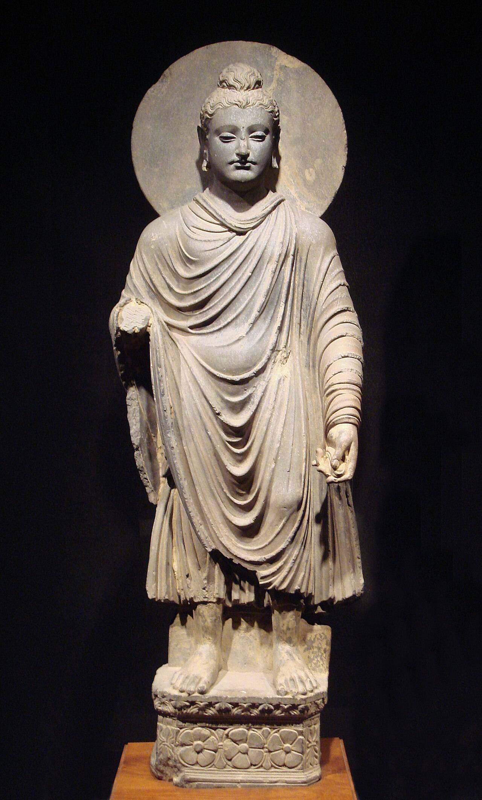
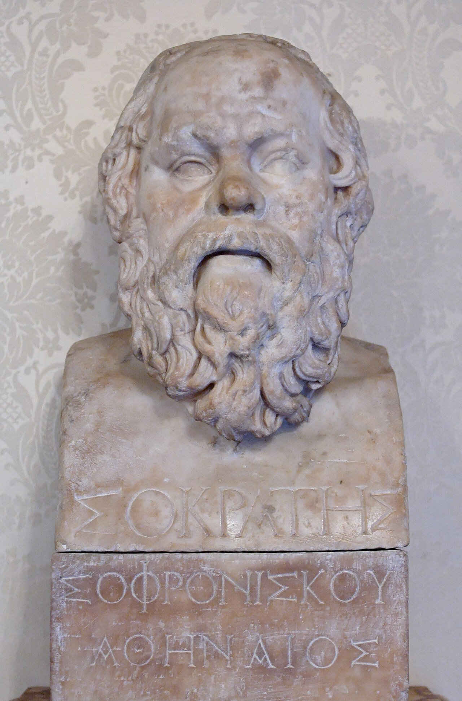
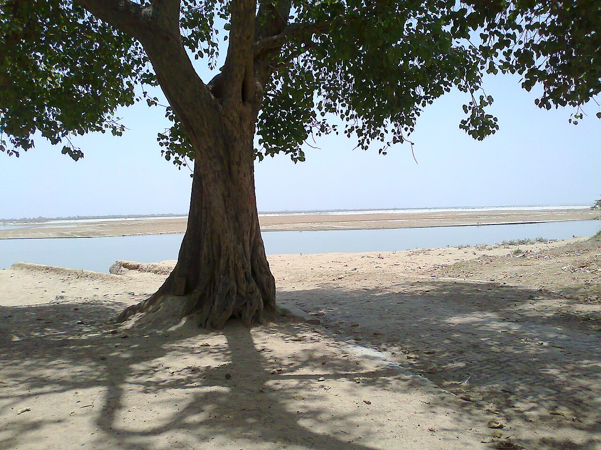
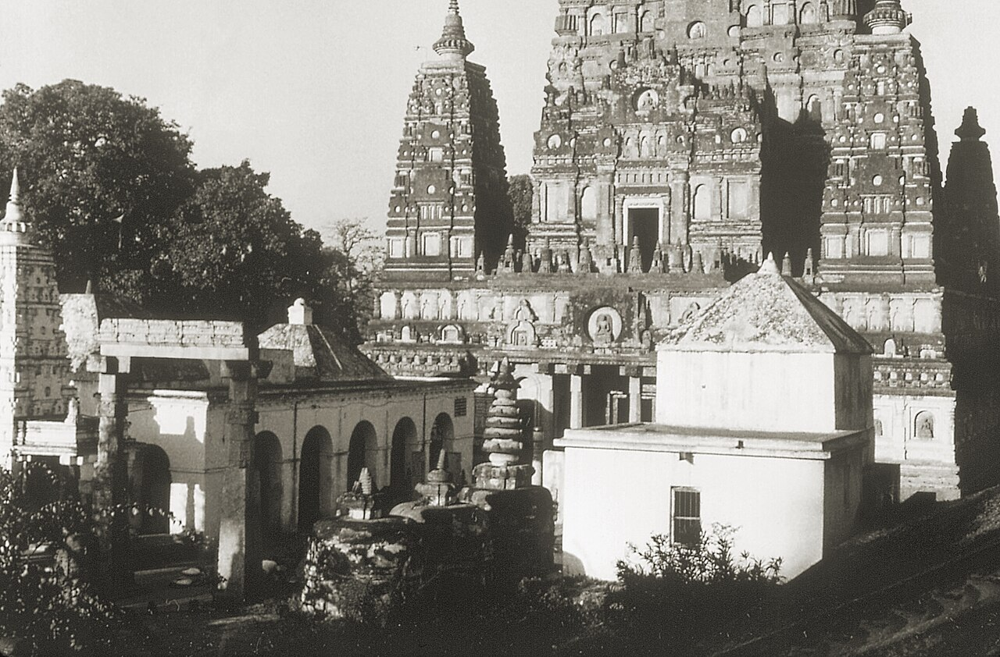
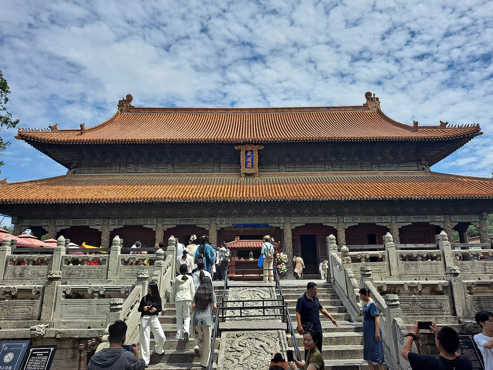
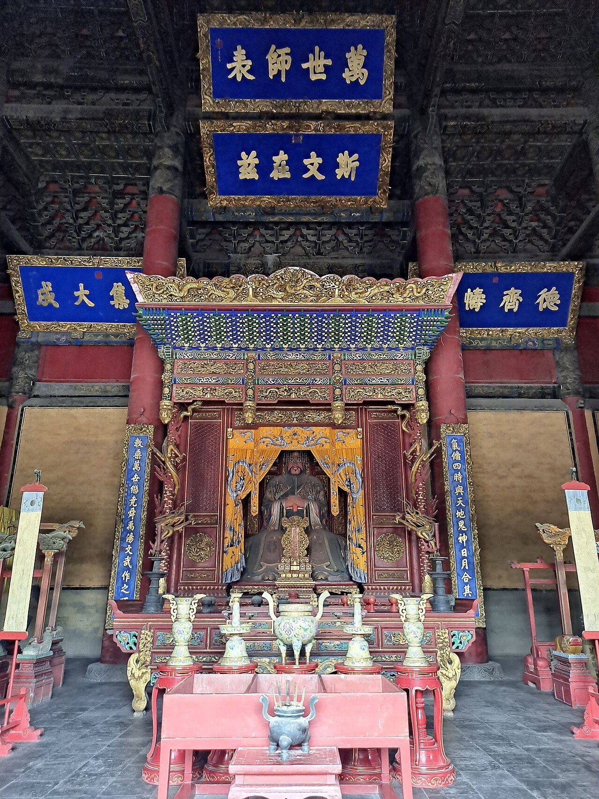
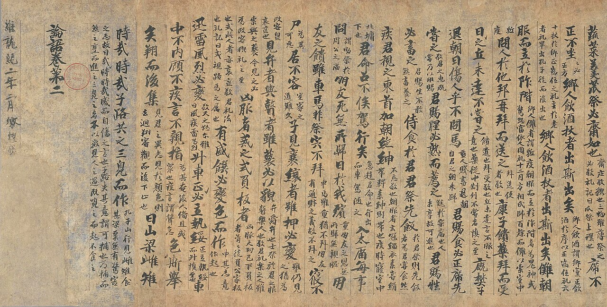

歴史・地理 History & Geographyブッダ・ 孔子・ ソクラテスは、 なぜ 同じころに 現れた？ インド、中国、ギリシャ。互いの名前も知らなかったはずの3人が、前500年ごろをはさむ100年ほどのあいだに現れ、いまも読まれる教えを残しました。しかも3人とも、自分で書いた本を残していません。3つの地域の地図と生没年の帯を手がかりに、偶然かどうかを確かめてみませんか。
2026.11.09 UP 約8分で読める 文：SOMOSOMO編集部
写真：アテネの古代アゴラ Temple of Hephaestus from ancient agora Athens／Jebulon（2015年、CC0）
Previously
前回は、ペルシアの話でした。キュロス2世が興し、ダレイオス1世が広げた帝国は、征服した人々の宗教や習慣を残し、州ごとに長官を置き、王の道と貨幣、アラム語の書きことばで広い国をまとめました。その帝国は、西はギリシャ、東はインドと接していました。
アテネ、前399年。牢の中で、70歳ほどの男が毒にんじんの杯を飲み干しました。哲学者のソクラテスです。神々を敬わず、若者を堕落させたという罪で死刑を言い渡されました。友人たちが逃がそうとしても、彼は逃げなかったと、弟子のプラトンは書いています。
その80年前の前479年には、8,000キロほど東の中国で、孔子が70歳あまりで亡くなっていました。インドのガンジス川の流域では、同じころ、ブッダが教えを説いていたとされます。生きた年には諸説ありますが、3人はおよそ100年のあいだに続けて現れました。
3人の教えは、2,000年以上たったいまも世界中で読まれています。けれども、3人が互いの名前を聞いたことがあったとは考えにくいでしょう。遠く離れた3つの土地で、なぜほぼ同じころに、こうした人々が現れたのでしょうか。
In a word
豊かになった町 と国どうしの争い が、「どう生きるか」を問う人を生んだから。
01
The Axial Age
「同じころ」と 名づけたのは、 20世紀の 哲学者だった
この重なりに名前をつけたのは、ドイツの哲学者ヤスパースです。1949年の本『歴史の起原と目標』で、前800年から前200年ごろを「枢軸時代」（軸の時代）と呼びました。人類の歴史が大きく向きを変えた、軸のような時代という意味です。
ヤスパースによれば、この時代に中国、インド、ペルシア、パレスチナ、ギリシャで、互いに影響し合うことなく、人類の考え方の土台が同時に築かれました。中国の孔子や老子、インドのブッダ、ペルシアのゾロアスター、ヘブライの預言者たち、ギリシャの哲学者たちです。
ただし、これは一つの見方です。600年という幅は「同じころ」と呼ぶには長く、地域どうしのつながりも薄いのです。前後の時代とはっきり区切れるのか、という疑問もあります。2006年には、イギリスの歴史家マカロックが、違うものを何でも詰めこんだ考え方だと批判しました。
それでも、この時代に宗教や思想が大きく変わったことは、多くの研究者が認めています。分かれているのは、その理由です。まず、3人の生きた年を並べてみましょう。
Fig.01 3人が そろって生きていた年は、 一年もない
前550 前500 前450 前400
前563–483 ブッダ（古い説） 20世紀の前半に広く使われた年代 前480–400 ブッダ（新しい説） 亡くなった年を前400年の前後20年ほどとする研究者が多い 前551–479 孔子 中国、春秋時代の魯の人 前470–399 ソクラテス ギリシャ、アテネの人
見どころは、どちらの説をとっても、3人の帯がそろって重なる年が一年もないこと。帯の長さは年数に比例します。新しい説のブッダの年代はおおよそで、ソクラテスの生まれ年は前469年とも。
古い説なら、ブッダが亡くなったのはソクラテスが生まれる前です。新しい説なら、ブッダが生まれたころに孔子が亡くなります。3人は、同じ年に同じ空の下にいた「同時代人」というより、100年ほどのうちに続けて現れた人々でした。
3人の顔も、いまに伝わってはいません。よく知られた姿は、どれも後の時代に作られたものです。


後の時代に作られた像 左は、いまのパキスタン北西部にあたるガンダーラで、1〜2世紀ごろに作られた仏像です。右は、ローマ時代に作られたソクラテスの胸像で、台に彼の名が刻まれています。どちらも、本人の死から数百年後の作です。写真：左 Gandhara Buddha (tnm) ／World Imaging（2004年、パブリックドメイン）、右 Bust Socrates Musei Capitolini MC1163 ／Marie-Lan Nguyen（2006年、パブリックドメイン）
02
Iron and Cities
鉄と交易が、 町と 「考える余裕」を 生んだ
3つの地域に共通する一つめの変化は、鉄です。鉄の斧やすきは、青銅や石の道具より森を切り開きやすく、固い土も耕せます。インドのガンジス川の流域では、町が育ち始める数百年前から、鉄が使われていました。
森が畑に変わると、とれる作物が増えます。食べきれない分があれば、畑を耕さずに暮らす人を養えます。商人、職人、役人、そして学ぶ人や教える人です。ブッダのころのガンジス川の流域では、城壁をめぐらせた大きな町がいくつも生まれました。研究者が「第2の都市化」と呼ぶ動きです（1回目は第1話のインダスの町）。

ガンジスの岸辺 インド北部のカマルガンジに近い、ガンジス川の岸辺です。川幅が広く、岸の向こうに白い砂州が続きます。この川の中流から下流にかけての平原が、ブッダが歩いた土地でした。写真はイメージです。写真：River Ganges near Kamalganj ／Anshulksingh（2012年、CC0）
中国でも、鉄はこのころには知られていましたが、まだ青銅が主役でした。そのころ増えていたのが「士」と呼ばれる人々です。名門の遠い分家などで、権力の座にはつけないものの、学問を身につけて役人になる道を探していました。孔子の父は魯の国の軍人で、孔子もこうした人々の一人だったとされます。
ギリシャでは、アテネのような都市国家が、周りの海で交易して豊かになりました。そこには、町から町へ渡り歩いて弁論や学問を教える人々もいました。インドでも、家を出て修行しながら各地を歩く人々が、ブッダのころには大勢いました。
Fig.02 8,000キロを 隔てた 3つの地域
エーゲ海
ガンジス川
黄河
ペルシア
アテネ
ブッダガヤ
ルンビニ
曲阜（魯）
ペルセポリス
3人が教えた地域
ブッダが生まれた地（伝承）
そのほかの場所
見どころは、3つの地域がそれぞれ大きな川や海のそばにあり、あいだにペルシアの広い国が横たわっていること。ブッダが教えたのは主にガンジス川の中流でした。地図は Natural Earth（パブリックドメイン）から作りました。
もう一つの共通点は、どの地域も一つの大きな国にまとまっていなかったことです。インドの北部には王国や、王を置かない国が並び、中国では周の王の力が弱まって有力な国々が争っていました。ギリシャは独立した都市国家の集まりで、国どうしの戦争も絶えません。
国が争い、豊かな町が生まれると、昔ながらのやり方では答えの出ない問題が増えます。正しい王とはだれか。人はどう生きればよいのか。古い神々や儀式の決まりに任せず、それを自分の頭で考える人が、3つの地域に現れました。
03
How to Live
3人は、 生まれや儀式より 「心と行い」を 問うた
ブッダの本名はゴータマ・シッダールタ。伝承では、いまのネパールのルンビニで、シャーキャ族という一族の王家に生まれました。けれども家を捨てて修行の旅に出て、ブッダガヤの菩提樹の下で悟りを開いたとされます。ブッダとは「目覚めた人」という意味です。
当時のインドでは、バラモンと呼ばれる神官が祭りの儀式を受け持ち、生まれによる身分の上下を説いていました。ブッダは、人が苦しむのは物ごとへの執着のせいだと説き、生まれの尊さを主張するバラモンの考えを批判しました。ブッダの教団には、どの身分の人も入れました。

悟りの地の寺院 インドのブッダガヤにあるマハーボーディ寺院を、1975年に撮った写真です。ブッダが悟りを開いた場所とされ、細かな彫刻に覆われた塔の下の部分が写っています。最初の寺院は前3世紀に建てられ、いまの建物は6世紀ごろのものです。写真：Mahabodhi Temple - CDC - 1975 ／アメリカ疾病対策センター（CDC）の職員（1975年、パブリックドメイン）
孔子が生まれた魯は、いまの中国の山東省にあった小さな国です。君主の下で3つの名門の家が力をふるい、主君をしのぐありさまでした。孔子は役人として国を立て直そうとしましたが、うまくいかず、国を出て諸国を渡り歩きます。故郷に戻ったのは68歳のときでした。
孔子が説いたのは「仁」（人を思いやる心）と「礼」（ふさわしいふるまい）です。礼は古くからの儀式の決まりでもありましたが、孔子はそれを、人として身につけるべき心がけとして語り直しました。神霊は敬うけれども遠ざけておく、という態度だったと伝えられます。


孔子をまつる廟 左は、孔子のふるさと曲阜にある孔子廟の正殿、大成殿です。右はその内部で、奥に孔子の像がまつられています。像は後の時代に作られたもので、本人の姿を写したものではありません。写真：左 Dacheng Hall, Qufu 1 、右 Interior of Dacheng Hall, Qufu ／いずれも 호고호（2026年、CC0）
ソクラテスが生きたアテネは、ギリシャの都市国家の一つです。彼は兵士としてペロポネソス戦争に加わりましたが、アテネはライバルのスパルタに敗れます。前404年には、スパルタを後ろ盾にした30人の独裁者が町を支配しました。
そうした町で、ソクラテスは自分は何も知らないと言い、勇気とは何か、正しさとは何かを、人々に短い言葉で問い続けました。答えたつもりの相手は、やがて行き詰まります。神々を否定したのではありません。何が善いかを、言い伝えに任せず、自分で確かめようとしました。
この3人だけではありません。同じころ、インドでは生き物を殺さないことを重んじるジャイナ教を開いたマハーヴィーラが、ギリシャではピタゴラスたちが現れました。中国の老子は、実在したかどうかも含めて議論が続いています。
04
Written by Others
教えを 書き残したのは、 本人ではなく 弟子だった
3人には、もう一つ共通点があります。自分で書いた本が残っていないことです。教えがいまに伝わったのは、それを聞いた弟子たちが覚え、のちに書き残したからでした。
ブッダの教えは、長いあいだ口で伝えられました。伝承では、ブッダの死から3か月後に弟子たちが集まり、そばに仕えた弟子が教えを唱え、皆で確かめたとされます。スリランカや東南アジアに伝わるパーリ語の経典が文字に書きとめられたのは、伝承では前1世紀、スリランカでのことでした。
孔子の言葉を集めた『論語』も、孔子自身の本ではありません。弟子たちが書きとめた先生の言葉を、弟子やその弟子が200年ほどかけて編んだと考えられています。論語の中で孔子は、自分は古い教えを伝えるだけで、新しく作りはしない、と語っています。

巻物に写された論語 中国西部の敦煌で見つかった、唐の時代の論語の写本です。大きな字が本文で、そのあいだに2列に分かれた小さな字は、後の学者がつけた注です。孔子の死から1,000年以上たっても、こうして書き写され続けました。写真：Manuscript of Lunyu ／作者不明（8〜9世紀、パブリックドメイン）
ソクラテスも、1行の文章も残していません。彼の姿を伝えるのは、弟子のプラトンやクセノフォンが書いた本です。プラトンは、ソクラテスが人々と語り合う対話の形で本を書き、その作品は2,400年後のいまも全部が残っているとされます。
3人が同じころに現れたのは、下の図のような条件が3つの場所でそろったからだ、という見方があります。
Fig.03 3つの地域で そろった 条件
土台 鉄の道具と交易 畑を広げ、物を運んで豊かになる。インドでは鉄が早くから、ギリシャでは海の交易が 暮らし 町と余裕のある人 作物が余り、町が育つ。商人や役人、学ぶ人や教える人を養える 政治 小さな国々の争い 大きな国にまとまらず、争いが続く。古い王や神官の権威が揺らぐ 人 どう生きるかを問う人 生まれや儀式より、心と行いを問う。ブッダ・孔子・ソクラテス 伝わり方 弟子が受け継ぐ 口で唱え、のちに書き残す。本人の本はなくても教えが残る
見どころは、どの段も3つの地域で別々に起きたこと。ただし、それぞれの段の時期や中身は地域ごとに違い、この流れ自体も研究者の見方の一つです。
05
By the Numbers
どこも、 小さな国が ひしめいていた
16 仏典に出てくる、ブッダのころのインドの大きな国の数16大国と呼ばれる。ほとんどは王国で、王を置かない共和制の国もあった
148 中国の歴史書『春秋左氏伝』に名前が出てくる国の数周の王の下で、大小の国が争った。孔子の魯もその一つ
1,500 知られている古代ギリシャの都市国家（ポリス）のおおよその数アテネもスパルタも、その一つにすぎなかった
Here's the Fun Part
ここが面白い！3人が現れた場所は、 硬貨が 生まれた場所だった
3人のいた地域には、もう一つ、思いがけない共通点があります。世界で最も古い硬貨 が作られた地域と、ほぼ重なります。アメリカの人類学者グレーバーが、2011年の本『負債論』で指摘しました。
前回出てきたリュディア（いまのトルコ西部）の、前600年ごろの金と銀の混じった硬貨がその一つです。中国の黄河の流域では、前640〜前550年ごろにシャベルの形をした青銅の貨幣を作った工房の跡が見つかっています。インド北部でも、銀の硬貨が生まれました。
インドの硬貨の始まりには、前6世紀から前4世紀まで説の幅があり、ペルシアから伝わったという見方もあります。それでも、硬貨と思想家がそろって現れたという重なりは、多くの人の目を引いてきました。
グレーバーの考えはこうです。硬貨は、見知らぬ人どうしの売り買いを広げ、ものの値打ちを数で測る市場を生みました。その一方で、数では測れない「善く生きる」ことを問う教えも、同じ場所で育った。損得の世界と、心の世界 が、このとき分かれたというのです。
次に財布の小銭を数えるとき、思い出してみてください。その硬貨という発明は、ブッダや孔子やソクラテスの教えと、ほとんど同じくらい古いのです。
To be continued
ソクラテスに死刑を言い渡したのは、王でも神官でもなく、くじで選ばれたアテネの市民たちでした。市民が自分たちで裁き、自分たちで国のことを決める。そのしくみは、ソクラテスが生まれる40年ほど前にアテネで始まっていました。民主主義は、なぜアテネで生まれたのでしょうか。
出典・参考
Axial Age （Wikipedia 英語版）：1949年にヤスパースが『歴史の起原と目標』で唱えたこと、前8〜前3世紀、中国・インド・ペルシア・ユダヤ（パレスチナ）・ギリシャで互いに影響し合わずに起きたとする主張、各地に小さな国々が争い、町から町へ渡り歩く学者がいたこと、ヤスパースが挙げた人々（孔子・老子・ブッダ・ゾロアスター・預言者・ギリシャの哲学者）、批判（共通点が示せない、前後の時代と区切れない、地域どうしの接触が少ない）、2006年のマカロック（イギリスの歴史家）の批判、ベラーとヨアスの「広く、ただし全員ではなく受け入れられている」という評価、グレーバーの硬貨についての指摘、ゾロアスターの年代、マハーヴィーラがブッダと同時代であることGautama Buddha （Wikipedia 英語版）：前6〜前5世紀、ルンビニでシャーキャ族に生まれたという伝承、修行の旅、ブッダガヤで悟り、サールナート、80年の生涯、年代の諸説（前563〜前483年とする20世紀前半の説、1988年のシンポジウムで多くが前400年の前後20年ほどに死去としたこと）、第2の都市化と重なること、バラモンの生まれの尊さの主張への批判、どの身分も教団に入れたこと、業を儀式ではなく心の意図とみたこと、最も古い仏教の写本（前1世紀〜3世紀）、初期の美術ではブッダの姿を表さず、のちにガンダーラで像が作られたことPali Canon （Wikipedia 英語版）：死の3か月後の第1結集でアーナンダが経を唱えたという伝承、口で伝えられたこと、前1世紀にスリランカで書きとめられたという伝承Mahajanapadas （Wikipedia 英語版）：前6〜前4世紀の16の王国と共和制の国（数字の欄）、ブッダがマガダのビンビサーラ王のころに教えたことHistory of India （Wikipedia 英語版）：ガンジス川の平原の「第2の都市化」（城壁をめぐらせた大きな町、人口の増加、交易、打刻印のある硬貨、文字の導入）。Iron Age （同）：ガンジス川の平原で都市化の数百年前から鉄が使われていたこと、中国では前9世紀までに鉄が知られていたが前900〜前100年ごろは主役ではなかったことMahabodhi Temple （Wikipedia 英語版）：ブッダが悟りを開いた地とされること、アショーカ王による前260年ごろの最初の寺院、いまの建物は6世紀ごろ、高さ55m余りの塔Confucius （Wikipedia 英語版）：前551〜前479年、魯の曲阜の近くで生まれたこと、父が魯の軍人だったこと、3つの名門の家（三桓）、国を出て諸国を回り68歳で戻ったこと、71〜72歳で死去、仁と礼、五経を書いた・編んだという伝承Analects （Wikipedia 英語版）：弟子たちの記録を死後に編んだという『漢書』の説明、戦国時代に約200年かけて編まれたとする見方、漢の時代に今の形になったこと、鬼神は敬うが遠ざけるという態度。「述べて作らず」は『論語』述而篇の冒頭Spring and Autumn period （Wikipedia 英語版）：前770〜前481年ごろ、周の王の力が弱まり国々が争ったこと、新しい層「士」、『春秋左氏伝』に名の出る148の国（数字の欄）Socrates （Wikipedia 英語版）：前470（または469）〜前399年、本を書かずプラトンとクセノフォンらの記録で知られること、自分は知らないと言ったこと、短い問いと答えの問答、ペロポネソス戦争での従軍、30人の独裁者、神々を信じていたことTrial of Socrates （Wikipedia 英語版）：前399年、不敬と若者の堕落の罪、くじで選ばれた市民の陪審、毒にんじん、逃亡のすすめを断ったことPlato （Wikipedia 英語版）：対話の形の著作、ほぼすべての対話篇にソクラテスが登場すること、2,400年後も全作品が残っているとされることPolis （Wikipedia 英語版）：知られている都市国家は約1,500（数字の欄）Temple of Hephaestus （Wikipedia 英語版）：アゴラの北西の丘に建つ神殿、前449年に建設が始まったこと（扉の写真）Coin （Wikipedia 英語版）：リュディアの金銀の合金の硬貨（前600年ごろ）、中国河南省の官荘遺跡のシャベル形の青銅貨幣の工房（前640〜前550年）、インドの打刻印の硬貨の年代（前575年ごろの可能性〜前4世紀半ば）とペルシアからの影響とする説。History of coins （同）：リュディアの獅子の硬貨David Graeber, Debt: The First 5,000 Years （2011年。邦訳『負債論』）：枢軸時代の中心の時期は硬貨が発明された時期とほぼ重なり、硬貨が最初に作られた3つの地域に思想家たちがいたという指摘（Axial Age の記事の引用による）
地図（Fig.02）：Natural Earth （パブリックドメイン）の海岸線から作成。町の位置はおおよそ。アテネと曲阜の距離（約8,000km）は2点の緯度・経度からの概算
写真：CC0 またはパブリックドメイン。クレジットはそれぞれの写真の下に記しています